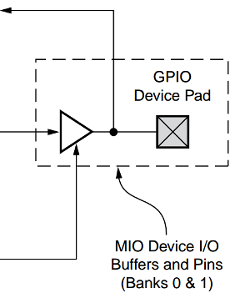

General Purpose Input or Output
Driver perspective
Về cơ bản, các subsytem của Linux Kernel như SPI, I2C, GPIO ... đều hoạt động với mô hình (concept) tương tự nhau. Các tài nguyên phần cứng được đăng ký với Kernel, các module khác của Kernel muốn truy cập đến các phần cứng này sẽ cần phải gửi yêu cầu.
- GPIO Controlller Driver: thực hiện đăng ký một
struct gpio_chipvới Linux kernel, khai báo các tài nguyên có thể cung cấp được của GPIO controller.gpio_chipcung cấp các phương thức nhưrequest,set,get... và thông qua các phương thức này có thể tác động đến phần cứng GPIO.
gpio@e000a000 {
compatible = "xlnx,zynq-gpio-1.0";
#gpio-cells = <0x2>;
clocks = <0x1 0x2a>;
gpio-controller;
interrupt-parent = <0x3>;
interrupts = <0x0 0x14 0x4>;
reg = <0xe000a000 0x1000>;
...
};
Zynq GPIO Controller is described as a node in Device Tree.
-
User modules: các module khác trong trong trường hợp muốn sử dụng một pin GPIO thuộc quyền quản lý của GPIO Controller sẽ gửi yêu cầu đến kernel để xin tài nguyên. GPIO Subsystem cung cấp các APIs như
gpio_request_onevàgpio_request_arrayđể các module có thể yêu cầu tài nguyên. Nếu quá trình yêu cầu tài nguyên thành công, module sẽ điều khiển GPIO thông qua các APIs nhưgpio_set_valuevàgpio_get_value. -
Liên kết giữa Other module và Controller driver:
gpio_number <-1-> struct gpio_desc *<-2-> struct gpio_chip *
Quá trình 1, từ gpio_number có thể gọi đến gpio_desc bằng các API nhưgpio_to_desc. Về bản chất, gpio_desc được lưu trữ bằng một mảng tĩnh:static struct gpio_desc gpio_desc[ARCH_NR_GPIOS];trong đó gpio_number là chỉ số của mảng tĩnh này, do đó truy cập đến gpio_desc của một gpio_number đơn giản là truy cập đến một phần tử của mảng.
Quá trình 2, gpio_desc chứa con trỏ trỏ đếnstruct gpio_chip *chip;, do đó từ gpio_desc có thể dễ dàng truy cập được đến gpio_chip (desc->chip).
Quy trình gửi yêu cầu và sử dụng GPIO được mô tả trong một tài liệu khoa học trong mục References.
Userspace software perspective
Truy cập trực tiếp từ các device attribute trong sysfs
- GPIO Class
Trong gpiolib-sysfs.c khai báo struct class gpio_class trong hàm __init:
status = class_register(&gpio_class);
Với thuộc tính gpio_class_attrs:
static struct class_attribute gpio_class_attrs[] = {
__ATTR(export, 0200, NULL, export_store),
__ATTR(unexport, 0200, NULL, unexport_store),
__ATTR_NULL,
};
static struct class gpio_class = {
.name = "gpio",
.owner = THIS_MODULE,
.class_attrs = gpio_class_attrs,
};
Kết quả trong sys/class/gpio/ xuất hiện hai thuộc tính export/unexport.
/sys/class/gpio# ls -l
--w------- 1 root root 4096 Jan 1 00:00 export
lrwxrwxrwx 1 root root 0 Jan 1 00:00 gpiochip0 -> ../../devices/soc0/amba/e000a000.gpio/gpio/gpiochip0
--w------- 1 root root 4096 Jan 1 00:00 unexport
Hai thuộc tính export/unexport được sử dụng để yêu cầu/hủy yêu cầu đối với một GPIO.
- GPIO controller device
Trong quá trình controller driver đăng ký GPIO với Kernel (gpiolib), các attribute của gpiochip device được khởi tạo thông qua int gpiochip_export(struct gpio_chip *chip). Kết quả là một device được khởi tạo:
/sys/devices/soc0/amba/e000a000.gpio/gpio/gpiochip0
Các thuộc tính bên trong device này có dạng như sau
-r--r--r-- 1 root root 4096 Jan 1 00:00 base
lrwxrwxrwx 1 root root 0 Jan 1 00:00 device -> ../../../e000a000.gpio
-r--r--r-- 1 root root 4096 Jan 1 00:00 label
-r--r--r-- 1 root root 4096 Jan 1 00:00 ngpio
drwxr-xr-x 2 root root 0 Jan 1 00:00 power
lrwxrwxrwx 1 root root 0 Jan 1 00:00 subsystem -> ../../../../../../class/gpio
-rw-r--r-- 1 root root 4096 Jan 1 00:00 uevent
- GPIO Pin Device
Để có thể sử dụng được một pin GPIO, cần có quá trình gửi yêu cầu đến hệ thống. Quá trình này có thể sử dụng thông qua API gpio_request_array hoặc sử dụng các attributes export/unexport. Về cơ bản hai quá trình này sẽ thực hiện gọi đến API int gpiod_export(struct gpio_desc *desc, bool direction_may_change) để tạo ra các GPIO device.
dev = device_create(&gpio_class, desc->chip->dev, MKDEV(0, 0),
desc, ioname ? ioname : "gpio%u",
desc_to_gpio(desc));
Ví dụ với gpioN, device xuất hiện trong hệ thống như sau:
/sys/devices/soc0/amba/e000a000.gpio/gpio/gpioN
Các thuộc tính đó bao gồm:
/sys/devices/soc0/amba/e000a000.gpio/gpio/gpio1# ls -l
-rw-r--r-- 1 root root 4096 Jan 3 22:42 active_low
lrwxrwxrwx 1 root root 0 Jan 3 22:42 device -> ../../../e000a000.gpio
-rw-r--r-- 1 root root 4096 Jan 3 22:42 direction
-rw-r--r-- 1 root root 4096 Jan 3 22:42 edge
drwxr-xr-x 2 root root 0 Jan 3 22:42 power
lrwxrwxrwx 1 root root 0 Jan 3 22:42 subsystem -> ../../../../../../class/gpio
-rw-r--r-- 1 root root 4096 Jan 3 22:42 uevent
-rw-r--r-- 1 root root 4096 Jan 3 22:42 value
Truy cập thông qua các user module
Về cơ bản, quá trình truy cập một chân GPIO thông qua một user module cũng được thực hiện tương tự như truy cập trực tiếp qua các thuộc tính của gpio class và gpio device. Quá trình này chỉ khác nhau ở phương thức giao tiếp giữa User Space và Kernel Space. Thay vì trực tiếp sử dụng các thuộc tính của gpio class thì các ứng dụng user space sẽ tương tác qua các thuộc tính của User module (có thể là IOCTL hoặc device attributes).
Hardware perspective
Zynq7000
In Zynq, GPIO controller registers are memory mapped at base address 0xe000a000.

Figure. GPIO pin in Zynq7000
References
- GPIO in the kernel: an introduction - lwn.net